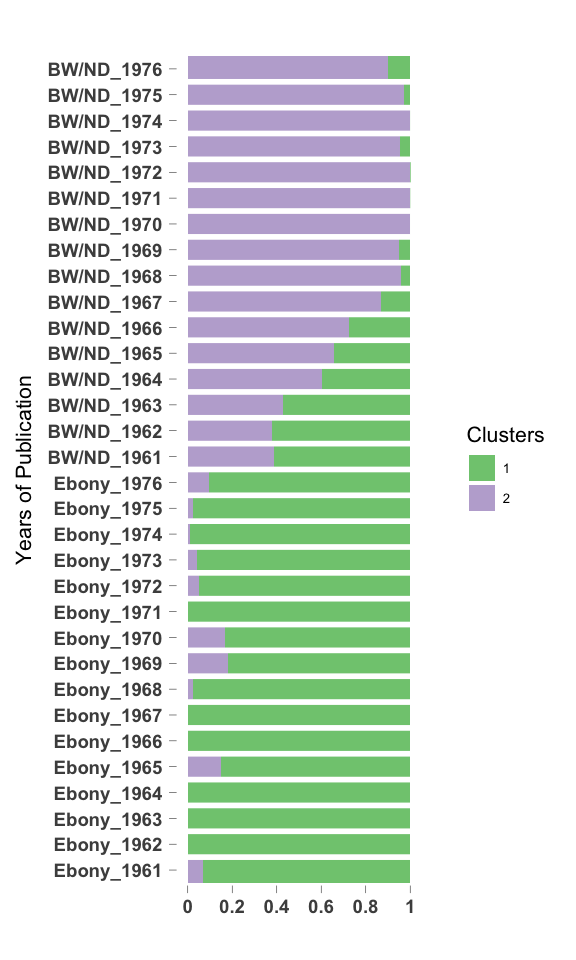

CountClust on Ebony + Black World/Negro Digest
Kushal K Dey
4/11/2018
library(CountClust)## Loading required package: ggplot2library(ggplot2)We apply CountClust on the word frequencies for yearly data from Ebony articles and Black World/ Negro Digest articles. We exclude terms like black, negro and afroamerican as they are known to be drivers of clusters.
We first read the counts table of word occurrences in Ebony and Black World/Negro Digest articles for every year.
tab_ebony <- get(load("../output/table_word_frequencies_ebony.rda"))
all_words_ebony <- get(load("../output/all_words_ebony.rda"))
tab_bl_nd <- get(load("../output/table_word_frequencies_BL_ND.rda"))
all_words_bl_nd <- get(load("../output/all_words_BL_ND.rda"))Combining the data.
common_words <- intersect(all_words_ebony, all_words_bl_nd)
tab_pooled <- rbind(tab_ebony[,match(common_words, all_words_ebony)],
tab_bl_nd[,match(common_words, all_words_bl_nd)])
rownames(tab_pooled) <- c(paste0("Ebony_", 1961:1976),
paste0("ND_", 1961:1970), paste0("BL_", 1970:1976))Filter out words
low_occur_words <- apply(tab_pooled, 2, function(x) return(sum(x[x!=0])))
tab2_pooled <- tab_pooled[, which(low_occur_words > 2)]tab3_pooled <- tab2_pooled[, which(nchar(colnames(tab2_pooled)) > 2)]
negro_words <- grep("negro", colnames(tab3_pooled))
black_words <- match(c("black", "blacks", "blackman"), colnames(tab3_pooled))
afroamerican_words <- match(c("african", "afroamerican"), colnames(tab3_pooled))
tl_words <- which(substring(colnames(tab3_pooled), 1,2) == "tl")
tab4_pooled <- tab3_pooled[, - c(negro_words, black_words, afroamerican_words, tl_words)]Fitting CountClust
topic_clus <- list()
for(k in 2:4){
topic_clus[[k]] <- maptpx::topics(tab4_pooled, K=k, tol = 1)
}
save(topic_clus, file = "../output/BL_ND_Ebony_CountClust_no_black_negro.rda")topic_clus <- get(load("../output/BL_ND_Ebony_CountClust_no_black_negro.rda"))K = 2
STRUCTURE plot
omega <- topic_clus[[2]]$omega
annotation <- data.frame(
sample_id = paste0("X", c(1:NROW(omega))),
tissue_label = factor(rownames(omega),
levels = rownames(omega)))
rownames(omega) <- annotation$sample_id;
StructureGGplot(omega = omega,
annotation = annotation,
palette = RColorBrewer::brewer.pal(8, "Accent"),
yaxis_label = "Years of Publication",
order_sample = TRUE,
axis_tick = list(axis_ticks_length = .1,
axis_ticks_lwd_y = .1,
axis_ticks_lwd_x = .1,
axis_label_size = 7,
axis_label_face = "bold"))
Top driving words
out <- ExtractTopFeatures(topic_clus[[2]]$theta, top_features = 50, method = "poisson", options = "min")
driving_words <- t(apply(out$indices, c(1,2), function(x) return(rownames(topic_clus[[2]]$theta)[x])))
driving_words[1:20,]## [,1] [,2]
## [1,] "says" "fanon"
## [2,] "cent" "theater"
## [3,] "ebony" "writers"
## [4,] "arc" "poetry"
## [5,] "per" "the"
## [6,] "years" "literature"
## [7,] "dodgers" "cruse"
## [8,] "wilt" "africa"
## [9,] "rickey" "afrikan"
## [10,] "baseball" "unita"
## [11,] "chamberlain" "literary"
## [12,] "team" "poets"
## [13,] "onlv" "shit"
## [14,] "coach" "cesaire"
## [15,] "year" "book"
## [16,] "desegregated" "ricky"
## [17,] "business" "chaka"
## [18,] "lias" "mpla"
## [19,] "league" "soyinka"
## [20,] "school" "poem"K = 3
STRUCTURE plot
omega <- topic_clus[[3]]$omega
annotation <- data.frame(
sample_id = paste0("X", c(1:NROW(omega))),
tissue_label = factor(rownames(omega),
levels = rownames(omega)))
rownames(omega) <- annotation$sample_id;
StructureGGplot(omega = omega,
annotation = annotation,
palette = RColorBrewer::brewer.pal(8, "Accent"),
yaxis_label = "Years of Publication",
order_sample = TRUE,
axis_tick = list(axis_ticks_length = .1,
axis_ticks_lwd_y = .1,
axis_ticks_lwd_x = .1,
axis_label_size = 7,
axis_label_face = "bold"))Top driving words
out <- ExtractTopFeatures(topic_clus[[3]]$theta, top_features = 50, method = "poisson", options = "min")
driving_words <- t(apply(out$indices, c(1,2), function(x) return(rownames(topic_clus[[3]]$theta)[x])))
driving_words[1:20,]## [,1] [,2] [,3]
## [1,] "says" "theater" "lennie"
## [2,] "ebony" "imamu" "libby"
## [3,] "arc" "afrikan" "smythe"
## [4,] "savs" "cruse" "said"
## [5,] "hite" "unita" "colored"
## [6,] "million" "shit" "mitch"
## [7,] "vear" "euroamerican" "bearcat"
## [8,] "recalls" "mpla" "amsac"
## [9,] "ith" "nana" "suh"
## [10,] "hae" "marxists" "him"
## [11,] "atty" "poetry" "you"
## [12,] "year" "africa" "healy"
## [13,] "campy" "barakas" "alba"
## [14,] "yearold" "fanons" "luke"
## [15,] "employes" "liberation" "englands"
## [16,] "vve" "aesthetic" "amanda"
## [17,] "years" "sonia" "bogalusa"
## [18,] "article" "literature" "pigmented"
## [19,] "football" "cabral" "wicker"
## [20,] "mrs" "panafricanist" "birchers"K = 4
STRUCTURE plot
omega <- topic_clus[[4]]$omega
annotation <- data.frame(
sample_id = paste0("X", c(1:NROW(omega))),
tissue_label = factor(rownames(omega),
levels = rownames(omega)))
rownames(omega) <- annotation$sample_id;
StructureGGplot(omega = omega,
annotation = annotation,
palette = RColorBrewer::brewer.pal(8, "Accent"),
yaxis_label = "Years of Publication",
order_sample = TRUE,
axis_tick = list(axis_ticks_length = .1,
axis_ticks_lwd_y = .1,
axis_ticks_lwd_x = .1,
axis_label_size = 7,
axis_label_face = "bold"))
Top driving words
out <- ExtractTopFeatures(topic_clus[[4]]$theta, top_features = 50, method = "poisson", options = "min")
driving_words <- t(apply(out$indices, c(1,2), function(x) return(rownames(topic_clus[[4]]$theta)[x])))
driving_words[1:20,]## [,1] [,2] [,3] [,4]
## [1,] "theater" "petey" "revenuesharing" "you"
## [2,] "afrikan" "beaubien" "says" "birchers"
## [3,] "mpla" "listons" "diana" "luke"
## [4,] "aesthetic" "mclendon" "pollard" "dorman"
## [5,] "kuumba" "kennedy" "ith" "white"
## [6,] "alsc" "liston" "motown" "lucy"
## [7,] "africa" "dorothys" "flo" "howd"
## [8,] "poetry" "1961" "ali" "freedom"
## [9,] "drama" "blodgett" "stillwater" "dadie"
## [10,] "literature" "crump" "inmates" "gawd"
## [11,] "ideology" "barrows" "crawfords" "postulates"
## [12,] "himes" "denison" "campy" "theatre"
## [13,] "poets" "viet" "frazier" "runagate"
## [14,] "cultural" "lennie" "cosby" "looked"
## [15,] "fabio" "god" "arc" "leadbelly"
## [16,] "colonial" "beins" "ere" "boy"
## [17,] "poems" "machen" "prison" "they"
## [18,] "afroamericans" "hasties" "astrology" "man"
## [19,] "shit" "weaver" "hite" "revels"
## [20,] "jihad" "nam" "lot" "joeys"This R Markdown site was created with workflowr